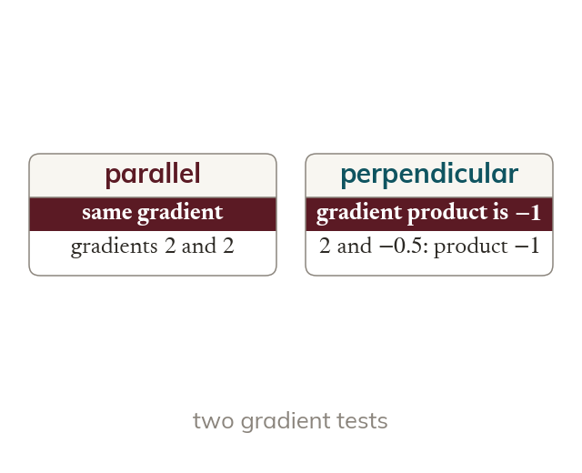

Parallel and perpendicular
Parallel lines have the same gradient. Perpendicular gradients multiply to give
Parallel lines have the same gradient. Perpendicular lines have gradients that multiply to give so each gradient is the negative reciprocal of the other.